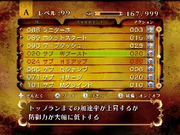

サブ系スキルの活用
基礎編
スキルの中にはサブ系スキルと呼ばれるスキルがあります。
アクションアイコンに描かれているドクロアイコンがサブ系スキルになります。
それらのスキルは他のスキルに比べて少々特殊な効果を持っています。
まず、サブ系スキルには必ず元となる表のスキルが存在します。
例えば、比較的手に入りやすい「サブMグラインド」はグラインド系最強のスキル「マッハグラインド」と同等の能力を持ちます。
しかも、元となる表のスキルよりもスキルポイントの消費が少なく、他のスキルにポイントを費やせるのは非常にお得感があります。
いいこと尽くめに思えるサブ系スキルですが、他のスキルにはないマイナス面を持ち合わせており、少々扱いにくさがあることは否めません。
受けるダメージ量がアップしてしまったり、効果が発動する度にリングを消費してしまったりなど、その効果は様々ですが、マイナス面を緩和するスキルの組み合わせもありますので、ポイントに余裕がある場合は色々な組み合わせを探してみると良いでしょう。

スキルポイントの消費が少なく、強力な能力を発揮するが、その代償も考えて使いましょう
 RSS
RSS